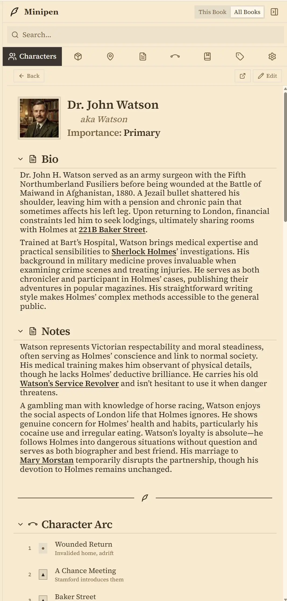

World Anvil Alternative
Penpoint vs World Anvil: a World Anvil alternative for finishing the book
World Anvil is a worldbuilding platform with a writing tool inside it. Here is what it does well, where its own documentation marks the edge, and what Penpoint does instead.
Last checked: September 2026, against World Anvil's changelog through September 7, 2026
The short answer
World Anvil is a better place to build a world other people read. Interactive maps, family trees, timelines, a themed public site with subscribers, and a campaign manager for the table. Penpoint has none of that.
Penpoint is a better place to finish a manuscript and take it with you. The draft leaves as a Word file, the spellchecker knows your invented names, and the book is a file on your own disk.
World Anvil costs $54 a year for the cheapest tier that includes its writing tool. Penpoint is $40 once.
Penpoint vs World Anvil at a glance
← Scroll to compare →
| Penpoint | World Anvil | |
|---|---|---|
| Price | $40 once | $54 to $300 a year |
| Cheapest plan with the writing tool | $40 once | $54 a year, Master tier |
| Where your book lives | A file on your drive | Your World Anvil account |
| Works offline | Yes, always | No, it is a website |
| Platforms | Windows, macOS, Linux | Any browser, no desktop or app-store app |
| Manuscript export | Word, PDF, EPUB, RTF, Markdown, text | HTML page only |
| Built-in spellchecker | Yes, offline, 60 languages | No, your browser's |
| Draft history | Snapshots, compared side by side | Copy a scene by hand |
| Interactive maps | No | Yes, with pins and layers |
| Family trees and diplomacy webs | No, character links only | Yes |
| Timeline and invented calendars | Yes | Yes |
| Sheet templates you design | Characters only, one shared layout | Many templates, custom ones on higher tiers |
| Co-authors on your world | No | Yes, and they can be free accounts |
| Two people writing one manuscript | No | No |
| Public world site for readers | No | Yes, with subscribers and paid content |
| Live links from prose to world entries | No, prose stays plain text | No, a search panel beside the draft |
What World Anvil gets right
World Anvil invites you to "Join 3,500,000+ worldbuilders, and hone your Gamemastery, Writing and Worldbuilding skills!" That is an accurate description of what the product is for. This is a place where worlds are built in public, by people who like doing it together.
The worldbuilding itself is deep in a way that is hard to reproduce. Articles are built from a large library of templates, so a character, a settlement, a religion, and a species each get fields written by someone who has thought about that category. Higher tiers let you design templates of your own. Interactive maps carry pins, layers, and custom markers, and they nest, so a continent opens into a city and the city opens into a tavern. Timelines, chronicles, and invented calendars all connect to the articles they describe.
Family trees and diplomacy webs draw the relationships between characters and nations, and they were rebuilt into the new editor in June 2026. Whiteboards, notebooks, variables, and statblocks cover the rest. The Autolinker will scan an article and connect every mention it recognizes to the right entry, which is a real time-saver on a big world.
Then there is the half that has no equivalent in a desktop app at all. Your world can be a themed public website with CSS you control, private sections inside public articles, subscriber tiers, and paid content. Co-authors come with five permission ranks, and World Anvil's own guide points out that "coauthors can be freemen," so the people helping you build do not need to pay. There is a campaign manager for running games at the table, and a community around all of it.
Their changelog shows this is under continuous, active development: a new search and inline article creation in January 2026, dashboard widgets in the spring, rebuilt family trees in June, a new article editor being rolled out piece by piece all year.
Why writers look for a World Anvil alternative
World Anvil's depth is not about writing a novel. The reasons writers start looking are narrow, specific, and all about the same feature.
Manuscripts barely appears in their own changelog
World Anvil publishes a dated changelog, and it is a good one. Between December 2023 and September 2026 it records 103 dated entries.
Manuscripts appears in eight of them.
Those eight are a permission change, a fix for deleting a comment, label colors switched to a darker shade, link styling, social buttons obeying a world setting, Manuscripts becoming searchable, and support for Android browsers. Not one of them is a new writing feature. In 2026 there are two mentions, both of which are on that list, in a year when the platform around it was rebuilt repeatedly.
Versioning a draft means you "manually version your drafts by copying scenes," in the words of their own guide. Penpoint keeps restorable snapshots and puts a draft beside the current text with the changes marked. A focus mode, in the same guide, is collapsing the two side panels, which is a fair description of a tool nobody has revisited in a while.
The exit is an HTML page
World Anvil's export guide describes one button, "Export in HTML," and then tells you what to do with the result: "save that page to PDF (using your browser's print-to-pdf functionality), copy-paste it into a Word document, or using an epub or mobi converter tool." The main Manuscripts guide is blunter still, advising you to "simply paste your novel into a word processor like Microsoft Word."
That is the documented route to the file format agents and publishers ask for. Copy and paste.
The membership is the editor
Manuscripts carries a banner on its own documentation: "Available to the Master subscription tier and above." It is not on the free tier. So the cheapest way to write a novel on World Anvil is $54 a year, and a lapsed membership does not just cost you a backup, it closes the editor your draft lives in.
Their Lifetime option has the same catch under a different name. It is a real one-time payment, but their FAQ defines the term: "Lifetime refers to the operational lifetime of the World Anvil platform, and not to the duration of the customer's life span." Lifetime memberships are non-refundable, and outgrowing your tier's storage or co-author count brings back a recurring bill, because "bolt-on additions are charged on a yearly basis."
Where Penpoint is different
World Anvil keeps your world on a website built for other people to read, and Penpoint keeps it in a file on your disk that nobody reads but you. Effort that World Anvil spends on an audience is effort Penpoint spends on the draft.
The draft leaves in a format a publisher accepts

Export Manuscript writes a Word file, a PDF, an EPUB, an RTF, Markdown, or plain text, with your chapter structure intact. Import runs in reverse and reads everything on that list except the PDF. There is no intermediate step, no clipboard, and no converter.
Worldbuilding leaves separately through its own export, so a story bible does not have to be reconstructed by hand from a web page.
A spellchecker that has read your book
Penpoint ships an offline spellchecker covering 60 languages, and it adds the names in your story to its own dictionary, so an invented name stops being underlined in red the moment it exists. On Windows and macOS, Grammarly and ProWritingAid work alongside it.
Structure the app understands

Characters, locations, items, and events are entries rather than pages, which is what lets Penpoint build views out of them. Minipen keeps those characters, places, and things beside your prose while you write, so the cast list is one panel away rather than one tab away. Locations nest, items have owners, and a relationship map draws who knows whom.
Custom calendars let a year have thirteen months and a week have five days, and the timeline does its arithmetic in that calendar rather than in ours. For a series, Series Arcs run a thread across several books while each book keeps its own chapters, and characters, locations, items, tags, and notes stay shared across all of them.
The Chapter Scanner builds the bible from the draft

If the book already exists, Scan Chapter for Content reads a finished chapter and turns the people, places, and things it finds into entries linked back to the chapters they appear in. Most worldbuilding tools assume you will fill in every character and place first and write second. This one works for writers who did it the other way around.
Nothing to renew, nothing hosted
A Penpoint book is a single .penpoint file. Copy it to a USB stick, keep it in a folder with your research, back it up however you already back things up, and open it in ten years without asking anyone's permission. Writing needs no account and no connection, and the $40 covers Windows, macOS, and Linux together, with Linux shipped as a real AppImage and .deb.
What World Anvil still does better than Penpoint
Most of the worldbuilding, and some of it we have no answer to at all.
Maps
Penpoint has no map feature. Not a weaker one: none.
World Anvil's interactive maps are one of the best things it does, and if you want to draw a world and let people click around it, this comparison ends here.
Family trees, and templates you design

World Anvil draws proper genealogies and diplomacy webs; Penpoint links characters to each other and stops there. Its article templates also go far past ours. Penpoint has custom fields for characters only, and even those are one shared layout applied to every character, while locations and items take the fields already built into Penpoint and nothing else.
Building a world with other people
Co-authors work, they have five permission ranks, and they do not need to pay for their own membership. Penpoint has no collaboration of any kind: no shared editing, no invited collaborators, and inline comments that are notes to yourself rather than a conversation. Neither app lets two people write one manuscript together, so that part is a draw, but on shared worldbuilding it is not close.
An audience
A World Anvil world can be a public site with themes, subscribers, and paid chapters. Penpoint has nothing built for readers: no public site, no subscriptions, no way to sell a chapter.
Your work surviving a dead hard drive
The same fact that your book lives only on your own drive also means nobody but you is backing it up. World Anvil is right about that, and their servers keep a copy without you thinking about it.
A .penpoint file can be copied anywhere, including to any cloud you already pay for, but that is a habit rather than a guarantee. Penpoint Cloud, an optional paid backup and sync service, keeps your writing end-to-end encrypted. It syncs your own devices and is not a collaboration feature.
Linking prose to the world, which neither of us solves
World Anvil's answer inside Manuscripts is a search panel: look up an article, read it beside the draft, edit it in place. Their own guide suggests that if you change a character's name you "might want to immediately update it across your world too," which is honest about what it does not do. Penpoint's manuscript prose is plain text by design for the same reason, so renaming a character does not rewrite chapters you already wrote.
Neither app rewrites your prose for you.
Which one should you choose?
Which one wins depends on whether the hard part of your project is the world or the manuscript, and on whether anyone else is supposed to see the world.
Choose World Anvil if
- You want maps people can click through
- Readers, players, or subscribers follow the world as you build it
- Other people write articles in your world with you
- You run tabletop campaigns in the same world you write in
- You want templates for every category of thing you invent
- Family trees across generations matter to your story
If the world is the point and the novel is one thing you do in it, this is the better home.
Choose Penpoint if
- Finishing the manuscript is the hard part
- You want the draft out as a Word file, not a web page
- You would rather pay $40 once than $54 a year
- You write on planes, in basements, and on bad hotel Wi-Fi
- You want your world on your own disk, not on somebody's website
- You have a finished draft and want the story bible built from it
Try it free for fourteen days. Every feature unlocked, no account and no credit card.
Penpoint and World Anvil pricing compared
| Penpoint | World Anvil | |
|---|---|---|
| Entry price | $40 once | $7.00/mo, or $54/yr |
| Middle tier | No tiers | $12.00/mo, or $99/yr |
| Top tier | No tiers | $34.00/mo, or $300/yr |
| Pay once | $40 | $650 or $1,350, by tier |
| Five years, entry plan | $40 | $270 |
| Free tier | No, a 14-day trial | Yes, without Manuscripts |
| Refund | 30-day money-back guarantee | Lifetime memberships non-refundable |
World Anvil prices exclude VAT. The entry price above is Master, the cheapest tier that includes Manuscripts, and five years of it comes to $270 against Penpoint's $40. There is a genuine free tier you can keep forever, which is more than Penpoint offers, though Manuscripts is not part of it.
The two pay-once figures are World Anvil's Lifetime memberships, $650 for Grandmaster and $1,350 for Sage. They can be upgraded but not downgraded, they are non-refundable, and bolt-on storage or co-author slots on top of one are billed yearly. Penpoint's 30-day money-back guarantee covers its single purchase, and updates are included.
Penpoint vs World Anvil: common questions
How do I move a manuscript from World Anvil into Penpoint?
World Anvil exports a manuscript as a single HTML page, so there is one step in the middle. Open that page in a word processor and save it as a Word file, then choose Import from Penpoint's manuscript toolbar. Penpoint reads Word, RTF, Markdown, plain text, and EPUB, and it shows you the chapters it found before it writes anything, so you can fix the split first. Your World Anvil articles are separate from the manuscript and do not travel inside that export.
What happens to my writing if I stop paying for World Anvil?
World Anvil keeps your account, but Manuscripts is a paid feature. Their own guides state that Manuscripts is available to the Master subscription tier and above, so a lapsed membership takes away the editor your draft was written in. Export your manuscript to HTML before you let a membership lapse. Penpoint works differently: the app is a one-time purchase and your book is a file on your disk, so nothing expires.
Can two people write one novel together in World Anvil?
No. World Anvil's co-author guide answers this directly, saying that Manuscripts do not currently support collaborative writing. Co-authors are a world feature, so two people can build the same world and write the same articles, with five permission ranks from Writer up to Co-Owner. Penpoint has no collaboration at all, so on shared worldbuilding World Anvil wins outright.
Does Penpoint have interactive maps?
No. Penpoint has no map feature of any kind, and World Anvil's interactive maps with pins, layers, and custom markers are one of the best things it does. If you want to draw a world and let readers click around it, World Anvil is the right choice and Penpoint is not.
Is Penpoint a subscription?
No. Penpoint is a one-time $40 purchase covering Windows, macOS, and Linux, with a 30-day money-back guarantee. World Anvil is a membership, starting at $7.00 a month or $54 a year for the cheapest tier that includes its writing tool.
Does World Anvil work offline?
World Anvil is a website, with no desktop application and no app-store mobile app, so it needs a browser and a connection. Penpoint is a desktop program that never wanted a connection: your book is a file on your drive, and turning the Wi-Fi off changes nothing about the app.
Can I publish my world for readers with Penpoint?
No. Penpoint has no public world site, no reader subscriptions, and no way to sell chapters, while World Anvil is built for exactly that and does it well. Penpoint keeps your world private to you, so if an audience reading it as you build is the point, World Anvil is the better tool.
Does Penpoint have a spellchecker that knows my invented names?
Yes. Penpoint ships an offline spellchecker covering 60 languages, and names from your story go into its dictionary so an invented name stops being underlined. World Anvil documents no spellchecker of its own and tells you to use the one in your browser, naming Chrome and the Grammarly and ProWritingAid extensions.
What is the cheapest World Anvil plan that includes the writing tool?
Master is the cheapest World Anvil tier that includes Manuscripts, at $7.00 a month or $54 a year excluding VAT. The free tier does not include it. Grandmaster is $12.00 a month, $99 a year, or $650 once, and Sage is $34.00 a month, $300 a year, or $1,350 once.
Can I try Penpoint before buying?
Yes. The Penpoint trial runs fourteen days with every feature unlocked, and needs no account and no credit card. World Anvil has a free tier you can keep forever, though it does not include Manuscripts, so you can hold an account there and trial Penpoint at the same time.
Your manuscript and your world, in one file.
Every feature for 14 days, with no account and no card. $40 once after that, for Windows, macOS, and Linux together.
Join our Discord